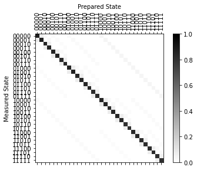

expval_meas_mitigator_circuits¶
-
expval_meas_mitigator_circuits(num_qubits, method='CTMP', labels=None)[źródło]¶ Generate measurement error mitigator circuits and metadata.
Use the
ExpvalMeasMitigatorFitterclass to fit the execution results to construct a calibrated expectation value measurement error mitigator.- Parametry
num_qubits (
int) – the number of qubits to calibrate.method (
Optional[str]) – the mitigation method'complete','tensored', or'CTMP'.labels (
Optional[List[str]]) – Optional, custom labels to run for calibration. If None the method will determine the default label values.
- Zwraca
- (circuits, metadata) the measurement error characterization
circuits, and metadata for the fitter.
- Typ zwracany
tuple
- Mitigation Method:
The
'complete'method will generate all \(2^n\) computational basis states measurement circuits and fitting will return aCompleteExpvalMeasMitigator. This method should only be used for small numbers of qubits.The
'tensored'method will generate two input state circuits of the all 0 and all 1 states on number of qubits unless custom labels are specified. Ftting will return aTensoredExpvalMeasMitigator. This method assumes measurement errors are uncorrelated between qubits.The
'CTMP'method will generate \(n+2\) input state circuits unless custom labels are specified. The default input states are the all 0 state, the all 1 state, and the \(n\) state with a single qubit in the 1 state and all others in the 0 state. Ftting will return aCTMPExpvalMeasMitigator.
Przykład
The following example shows calibrating a 5-qubit expectation value measurement error mitigator using the
'tensored'method.from qiskit import execute from qiskit.test.mock import FakeVigo import qiskit.ignis.mitigation as mit backend = FakeVigo() num_qubits = backend.configuration().num_qubits # Generate calibration circuits circuits, metadata = mit.expval_meas_mitigator_circuits( num_qubits, method='tensored') result = execute(circuits, backend, shots=8192).result() # Fit mitigator mitigator = mit.ExpvalMeasMitigatorFitter(result, metadata).fit() # Plot fitted N-qubit assignment matrix mitigator.plot_assignment_matrix()
<matplotlib.axes._subplots.AxesSubplot at 0x7f3176aa2280>
The following shows how to use the above mitigator to apply measurement error mitigation to expectation value computations
from qiskit import QuantumCircuit # Test Circuit with expectation value -1. qc = QuantumCircuit(num_qubits) qc.x(range(num_qubits)) qc.measure_all() # Execute shots = 8192 seed_simulator = 1999 result = execute(qc, backend, shots=8192, seed_simulator=1999).result() counts = result.get_counts(0) # Expectation value of Z^N without mitigation expval_nomit, error_nomit = mit.expectation_value(counts) print('Expval (no mitigation): {:.2f} ± {:.2f}'.format( expval_nomit, error_nomit)) # Expectation value of Z^N with mitigation expval_mit, error_mit = mit.expectation_value(counts, meas_mitigator=mitigator) print('Expval (with mitigation): {:.2f} ± {:.2f}'.format( expval_mit, error_mit))
Expval (no mitigation): -0.81 ± 0.01 Expval (with mitigation): -1.01 ± 0.01